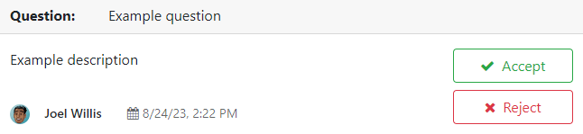

Foro¶
La aplicación Foro de Odoo es un foro de preguntas y respuestas diseñado para proporcionar soporte al cliente. Agregar un foro a un sitio web le permite construir una comunidad, fomentar la participación y compartir información.
Crear un foro¶
Para crear o editar un foro, vaya a . Haga clic en Nuevo o seleccione un foro existente y configure los siguientes elementos.
Nombre del foro: agregue el nombre del foro.
Modo: seleccione Preguntas para permitir marcar una respuesta como la mejor, esto significa que las preguntas aparecen como resueltas. Si selecciona Conversaciones entonces la función no es necesaria.
Nota
Sin importar el modo que haya seleccionado, solo se permite una respuesta por usuario en una publicación. Sin embargo, es posible comentar varias veces.
Clasificación predeterminada: elija cómo se ordenan de forma predeterminada las preguntas.
Más reciente: por la fecha de publicación más reciente de una pregunta.
Última actualización: por la fecha de actividad más reciente (se incluyen las respuestas y los comentarios).
Más votada: por la cantidad más alta de votos.
Relevancia: por la relevancia de la publicación (se determina por una fórmula).
Respondida: por la probabilidad de recibir una respuesta (se determina por una fórmula).
Nota
Los usuarios tienen varias opciones de clasificación (respuestas totales, vistas totales, última actividad) en el frontend del foro.
Privacidad: seleccione Público para que cualquier persona pueda ver el foro, Inició sesión para que sea visible solo para los usuarios que iniciaron sesión o Algunos usuarios para que sea visible solo para un grupo de acceso de usuarios específicos si elige un grupo autorizado.
A continuación, configure las ganancias de karma y los derechos relacionados con el karma.
Puntos de karma¶
Los usuarios pueden recibir puntos de karma según sus diferentes interacciones en el foro y se pueden usar para determinar a qué funcionalidades del foro pueden acceder, desde poder votar en las publicaciones hasta obtener permisos de moderador. Además, se utilizan para establecer los ranks del usuario.
Importante
Los puntos de karma de un usuario se comparten entre todos los foros, cursos y otro contenido de un único sitio web de Odoo.
Los usuarios de eLearning pueden recibir puntos de karma al interactuar con el curso y por completar pruebas.
Ganancias de karma¶
Varias interacciones en el foro pueden sumar o restar puntos de karma.
Interacción |
Descripción |
Ganancia de karma predeterminada |
|---|---|---|
Hacer pregunta |
Publicación de una pregunta. |
2 |
Pregunta votada a favor |
Otro usuario vota a favor de la pregunta que publicó. |
5 |
Pregunta votada en contra |
Otro usuario vota en contra de la pregunta que publicó. |
-2 |
Respuesta votada a favor |
Otro usuario vota a favor de la respuesta que publicó. |
10 |
Respuesta votada en contra |
Otro usuario vota en contra de la respuesta que publicó. |
-2 |
Acepta una respuesta |
Selecciona una respuesta publicada por otro usuario como la mejor. |
2 |
Respuesta aceptada |
Otro usuario selecciona la respuesta que publicó como la mejor. |
15 |
Respuesta reportada |
Otro usuario indica que alguna pregunta o respuesta que haya publicado está reportada como ofensiva. |
-100 |
Nota
Los nuevos usuarios reciben tres puntos al validar su dirección de correo electrónico.
Para modificar los valores predeterminados, vaya a , seleccione uno y vaya a la pestaña Ganancias de karma. Después, seleccione un valor para editarlo.
Si el valor es positivo (por ejemplo, 5), el usuario recibirá ese número de puntos en su cuenta cada vez que la interacción ocurra en el foro seleccionado. En cambio, si el valor es negativo (por ejemplo, -5), el número de puntos disminuirá. Use 0 si una interacción no debe afectar las recompensas del usuario.
Ludificación¶
Los rangos e insignias son útiles para fomentar la participación. Los rangos toman en cuenta el total de los puntos de karma, mientras que las insignias se pueden otorgar manual o automáticamente al completar los desafíos.
Rangos¶
Para crear nuevos rangos o modificar los predeterminados, vaya a y haga clic en Nuevo o seleccione uno que ya existe.
Agregue el nombre de rango, el karma necesario para pertenecer a él, su descripción, un mensaje motivacional para animar a los usuarios a alcanzarlo y una imagen.

Insignias¶
Para crear nuevas insignias o modificar las predeterminadas, vaya a y haga clic en Nuevo o seleccione una que ya existe.
Escriba el nombre y la descripción de la insignia, agregue una imagen y configúrela.
Asignar de forma manual¶
Si la insignia se debe otorgar manualmente, seleccione qué usuarios pueden otorgarla. Seleccione una de las siguientes opciones para la concesión a otorgar:
Todos: todas aquellas personas que no utilizan el portal (puesto que las insignias se otorgan desde el backend).
Una lista de usuarios seleccionados: los usuarios seleccionados con Usuarios autorizados.
Personas que tienen algunas insignias: los usuarios a quienes se les ha otorgado una insignia en Insignias requeridas.
Tiene la opción de restringir la cantidad de veces al mes en las que cada usuario puede otorgar una insignia al activar la opción Aportación mensual limitada a y escribiendo un Número de limitación.
Asignar de forma automática¶
Si la insignia debe otorgarse de manera automática cuando se cumplen ciertas condiciones, seleccione la opción Nadie, se asigna mediante los desafíos en Concesión a otorgar.
Después, determine cómo debe otorgarse la insignia haciendo clic en Agregar en la sección Recompensas de desafíos. Seleccione un desafío para agregarla o cree uno haciendo clic en Nuevo.
Truco
Puede darle a la insignia un Nivel de insignia del foro (Bronce, Plata, Oro) para darle más o menos importancia.

Usar un foro¶
Nota
El acceso a varias funciones depende de los puntos de karma que tenga un usuario.
Publicar preguntas¶
Para crear una nueva publicación, acceda al foro desde el frontend, haga clic en Nueva publicación y complete la siguiente información:
Título: agregue una pregunta o el tema de la publicación.
Descripción: agregue una descripción para la pregunta.
Etiquetas: agregue hasta cinco etiquetas.
Haga clic en Publicar pregunta.
Interactuar con las publicaciones¶
Puede aplicar diferentes acciones en una publicación.
Marque una pregunta como favorita haciendo clic en el botón de estrella (☆).
Sigua una publicación y reciba notificaciones (por correo o dentro de Odoo) cuando alguien responda, haciendo clic en el botón de campana (🔔).
Vote a favor (flecha hacia arriba ▲) o en contra (flecha hacia abajo ▼) de una pregunta o respuesta.
Marque una respuesta como la mejor haciendo clic en el botón de la palomita (✔). Esta opción solo está disponible si el Modo del foro está establecido en Preguntas.
Responder una pregunta.
Comente una pregunta o respuesta haciendo clic en el botón de la burbuja de conversación (💬).
Comparta una pregunta en Facebook, Twitter o LinkedIn haciendo clic en el botón de compartir nodos*.
Haga clic en el botón de elipsis (…) para:
Editar una pregunta o respuesta.
Cerrar una pregunta.
Eliminar una pregunta, respuesta o comentario. Puede Deshacer la acción de eliminar la pregunta después.
Marcar una pregunta o respuesta como ofensiva.
Convertir un comentario en respuesta.
Ver el Ticket de soporte, relacionado, si es que existe.
Nota
De manera predeterminada, se requieren de 150 puntos de karma para ver el perfil de otro usuario. Este valor se puede configurar al crear un nuevo sitio web.
Moderar un foro¶
Desde el frontend del foro, la sección Herramientas de moderación de la barra lateral, reúne todas las funciones esenciales para moderar.

Por validar: acceda a todas las preguntas y respuestas que esperan validación antes de que aparezcan en la pantalla de los no moderadores.
Nota
Una pregunta está pendiente de validarse si un usuario no tiene el karma requerido. El usuario no podrá publicar preguntas o respuestas mientras espera la validación. Solo se permite una pregunta pendiente de validación por usuario por foro.
Marcado: acceda a todas las preguntas y respuestas que se marcaron como ofensivas. Haga clic en Aceptar para quitar la bandera de ofensivo o en Ofensivo para confirmarlo. Luego seleccione una razón y haga clic en Marcar como ofensivo. Los usuarios que no tengan derechos de moderador no podrán ver la publicación y se le restarán 100 puntos de karma al conteo del usuario que lo publicó.

Cerrada: acceda a todas las preguntas que se cerraron. Puede Eliminar o Reabrir las preguntas que desee. Para cerrar una pregunta, ábrala y haga clic en el botón de elipsis (…), luego en Cerrar, seleccione una Razón de cierre y haga clic en Cerrar publicación. La publicación ya no será visible para los usuarios que no tengan derechos de moderador.
Nota
Si selecciona Es spam o publicidad o Es ofensiva o malintencionada como la razón de cierre, se le restarán 100 puntos de karma al conteo de la persona que hizo la publicación.
Truco
Cree o edite las razones de cierre en . Seleccione Básico como Tipo de razón si la razón debe usarse al cerrar una pregunta y Ofensivo si debe usarse para marcar publicaciones.
Gestione todas las publicaciones en , seleccione el foro y haga clic en el botón inteligente de Publicaciones. Al hacer clic en el botón de Acciones, puede Exportar, Archivar, Desarchivar, o Eliminar una o varias publicaciones.